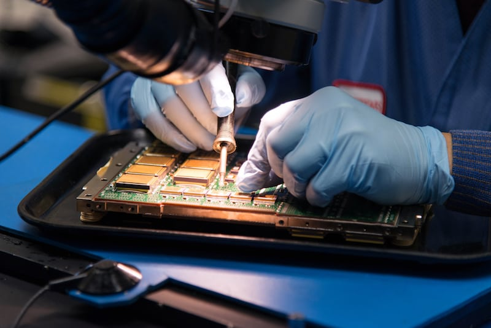
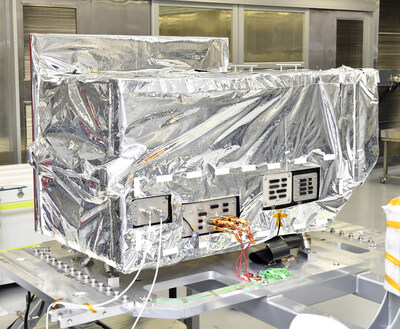
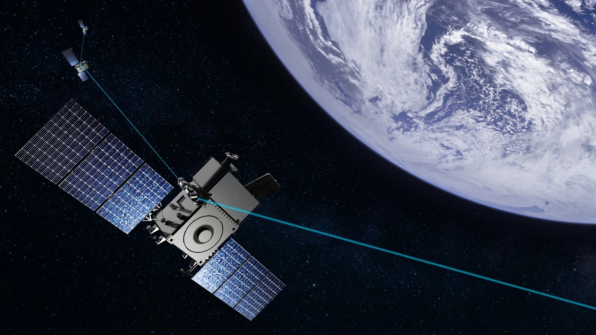

BAE Systems (BA)
BAE Systems plc to brytyjski globalny koncern obronny i aerospace, notowany na London Stock Exchange (ticker BA, listing XLON) - to spółka z ekspozycją europejską/brytyjską, a nie amerykańską. W kontekście orbitalnych centrów danych jest istotna z dwóch wąskich, lecz strategicznych powodów: dominacji w procesorach rad-hard (RAD750/RAD5545) oraz, po przejęciu Ball Aerospace w lutym 2024, kompetencji w łączności optycznej. Obie nisze są jednak technologicznie kluczowe, ale finansowo marginalne wobec skali grupy: sales za FY2025 (rok obrotowy do 31.12.2025, wyniki wstępne z 18.02.2026) wyniosły £30 662 mln, a backlog £83,6 mld (BAE Preliminary Results 2025, 18.02.2026).
W kontekscie: Promieniowanie i elektronika rad-hard vs COTS
Rdzeniem przewagi BAE jest grupa Space Systems w Manassas (Wirginia) - jedyny północnoamerykański zakład typu radiation-hardened-by-process klasy DoD Category 1A Trusted Source (BAE Annual Report 2024). To podstawowa bariera wejścia: posiadanie własnej, certyfikowanej foundry rad-hard, a nie tylko projektów. Flagowym produktem jest RAD750, "koń roboczy" przemysłu kosmicznego, który poleciał w ponad 100 satelitach, w GPS III, w łazikach marsjańskich (Curiosity, Perseverance), w JWST i Parker Solar Probe (BAE Annual Report 2024). Następcą jest wielordzeniowy RAD5545 w architekturze SpaceVPX, a uzupełnieniem RAD510 SoC, oferujący dwukrotną wydajność RAD750 i wytwarzany w procesie GlobalFoundries 45 nm SOI (BAE Annual Report 2024). Skala flight heritage jest trudna do podrobienia: od czasów Apollo 11, ponad 900 komputerów w kosmosie i łącznie ponad 9 000 lat na orbicie (BAE Annual Report 2024). To jest właśnie ten kapitał wiarygodności, który omawia Heritage lotny: co już naprawdę poleciało.
Dominacja BAE koncentruje się w najbardziej wymagającym segmencie - deep-space, GEO i misjach klasy strategicznej obronnej oraz NASA, gdzie liczy się odporność na dawkę skumulowaną i niezawodność, a nie cena. Trzej gracze - BAE, Honeywell oraz Microchip/Microsemi - kontrolują około 60% rynku elektroniki rad-hard (Mordor Intelligence, b.d.). Zagrożeniem z mechanizmem jest tu presja tańszej elektroniki COTS i rad-tolerant: w komercyjnych konstelacjach LEO, gdzie satelity są liczne i krótkożyjące, operatorzy wybierają tańsze układy AMD/Xilinx czy NVIDIA Jetson zamiast drogich, wolniej ewoluujących procesorów rad-hard. Ten kompromis kosztu, opóźnienia generacyjnego i wydajności jest rdzeniem dyskusji w COTS kontra rad-hard: koszty, opóźnienie generacyjne, wydajność. Mechanizm ryzyka jest prosty: jeśli rynek orbitalnego compute przesunie się ku masowym konstelacjom LEO, popyt na premium rad-hard rośnie wolniej niż cały rynek, a przewaga BAE pozostaje zamknięta w niszy defense-grade. Dodatkowo długie cykle kwalifikacji QML-V (lead time 52-104 tygodni) i ścisłe powiązanie z budżetami NASA i US Space Force oznaczają, że opóźnienia lub zmiana priorytetów obronnych wprost spowalniają zamówienia. Głównymi konkurentami w rad-hard są Honeywell, Microchip/Microsemi (układy RTG4, PolarFire), CAES/Cobham, AMD/Xilinx (rad-tolerant) oraz Teledyne (BAE Annual Report 2024).
Materiały spółki
Grafiki z materiałów spółki / IR (prawa właściciela, użycie redakcyjne). Pełny rejestr:
Spolki/assets/_licencje.json.

1. RAD5545 single-board computer - flagowy rad-hard komputer kosmiczny BAE. Źródło: www.aviationtoday.com; licencja: materiały spółki / IR - prawa właściciela, użycie redakcyjne.

2. Next-Gen OPIR / NGP sensor payload - przykład space hardware BAE Systems Space & Mission Systems dla US Space Force. Źródło: mma.prnewswire.com; licencja: materiały spółki / IR - prawa właściciela, użycie redakcyjne.

3. RMWT / FALKOR constellation z terminalami optycznymi - wizualizacja konstelacji satelitów z łącznością optyczną dla US Space Force. Źródło: www.adsadvance.co.uk; licencja: materiały spółki / IR - prawa właściciela, użycie redakcyjne.
W kontekscie: Łączność: optyczne ISL, downlink i latencja
Druga noga ekspozycji powstała przez akwizycję: w lutym 2024 BAE przejęło Ball Aerospace za około 5,5 mld USD / 4,4 mld GBP, tworząc dywizję BAE Systems Space & Mission Systems (BAE Annual Report 2024). Oferta obejmuje kompaktowe terminale laserowe do łączy space-ground oraz międzysatelitarnych ISL o przepustowości wielu gigabitów na sekundę, modemy software-defined, terminale naziemne oraz payloady OISL dla konstelacji SDA i Space Force. To bezpośrednio rozwija wątek Optyczne łącza międzysatelitarne (laser ISL) i roadmapy Tbps, gdzie laserowe crosslinki są kluczem do budowania orbitalnego backbone. Heritage Ball obejmuje terminal ALT (Airborne Lasercom Risk Reduction Terminal, współpraca z Boeing TSAT, 10 Gbps) oraz demonstracje LLOT (Long-Range Laser Communication Terminal) na poziomie 100 Gbps (Defense Update / Boeing TSAT, 2007). Konkretne kontrakty potwierdzają tę pozycję: 48 mln USD (2024) dla SMS na zaawansowane technologie komunikacyjno-elektroniczne dla SDA oraz 1,2 mld USD (2025) na satelity RMWT (Resilient Missile Warning & Tracking) MEO Epoch 2 z optycznymi crosslinkami (BAE Annual Report 2024).
Strona naziemna oferty - terminale ground i modemy - łączy się z problematyką Downlink do Ziemi: RF Ka/V band kontra optyczne stacje naziemne i wpływ chmur: to właśnie downlink i sieć stacji naziemnych decydują o realnej przepustowości zbiorczej orbitalnego centrum danych. Przewaga BAE jest tu jednak defense-grade, a nie komercyjna pod kątem wolumenu. Głównymi konkurentami w optyce są Mynaric (Condor), Tesat-Spacecom (CONDOR), Thales Alenia Space (TELEO), General Atomics, CACI International (CrossBeam/SkyLight) oraz Raytheon i L3Harris (BAE Annual Report 2024). Zagrożeniem z mechanizmem jest tu zarówno presja dedykowanych dostawców OISL nastawionych na masowy LEO, jak i ryzyko integracyjne samego Ball Aerospace: powodzenie BAE zależy od skutecznego wchłonięcia przejętej dywizji i utrzymania przewagi w segmencie obronnym, a nie w komercyjnym volume.
Pozycja rynkowa
BAE jest globalnym liderem w najbardziej wymagającym segmencie rad-hard (deep-space, GEO, strategiczna obrona), gdzie RAD750 i RAD5545 to standardowe procesory flagowych misji NASA i US Space Force, obok Honeywell i Microchip/Microsemi - cała trójka kontroluje około 60% rynku elektroniki rad-hard (Mordor Intelligence, b.d.). W łączności optycznej, po przejęciu Ball Aerospace, BAE Systems SMS należy do czołówki dostawców defense-grade terminali OISL/laserowych oraz ground terminals, szczególnie w ekosystemie SDA i Space Force (BAE Annual Report 2024).
Kluczowe jest tu jednak zaznaczenie wprost, jak marginalna jest ta ekspozycja w skali grupy. Segment Electronic Systems wygenerował w FY2025 sales £7 528 mln, czyli około 25% z całkowitych £30 662 mln sales grupy (BAE Preliminary Results 2025, 18.02.2026). Sama dywizja Space & Mission Systems stanowi około 22% sales segmentu Electronic Systems, czyli szacunkowo około £1,66 mld, w przybliżeniu 5,4% całkowitych sales BAE (BAE Annual Report 2024). Udział samej niszy rad-hard plus optyka wewnątrz SMS jest NIE UJAWNIONY osobno - jako wąsko specjalizowane komponenty i podzespoły szacuje się go na poniżej 1% całkowitych sales BAE, prawdopodobnie znacznie poniżej 0,5%. Innymi słowy: dominacja technologiczna w rad-hard CPU jest realna i unikatowa, ale finansowo jest to ułamek segmentu, nie rdzeń przychodów grupy uzależnionej od platform, okrętów i samolotów.
Ryzyka
Pierwsze i najważniejsze ryzyko ma charakter strukturalny: nisza nie przesuwa igły przychodów. SMS to około 5% sales grupy, a rad-hard i optyka to ułamek SMS, więc nawet dynamiczny wzrost orbitalnego compute i ISL nie zmienia fundamentalnie profilu BAE jako koncernu platformowo-obronnego. Mechanizm jest taki, że pozytywne zaskoczenia w tej dziedzinie giną w skali grupy.
Drugie ryzyko to długie cykle kwalifikacji i zależność od budżetów rządowych. Rad-hard wymaga kwalifikacji QML-V z lead time 52-104 tygodni, własnej foundry DoD Trusted Source i jest ściśle związany z budżetami NASA oraz US Space Force; opóźnienia lub przesunięcia priorytetów obronnych wprost spowalniają zamówienia i przychody. To bezpośrednio łączy się z kwestią żywotności i niezawodności sprzętu, którą rozwija Żywotność elektroniki vs dawka skumulowana i MTBF.
Trzecie ryzyko to konkurencja COTS/rad-tolerant w LEO oraz ryzyko integracyjne Ball Aerospace. W komercyjnych konstelacjach LEO dominują tańsze układy COTS i rad-tolerant (AMD/Xilinx, NVIDIA Jetson) oraz dedykowani dostawcy OISL (Mynaric, Tesat); sukces BAE w tym segmencie zależy od integracji Ball i utrzymania przewagi defense-grade, a nie zdobycia komercyjnego wolumenu. Mechanizm jest taki, że gdyby rynek orbitalnego compute przesunął się masowo ku tanim konstelacjom LEO, premium pozycja BAE pozostaje zamknięta w wąskiej niszy o ograniczonej dynamice.
Powiązane spółki
Inne notowane spółki z raportu dzielące z tą firmą co najmniej jeden wątek tematyczny (wspólny rynek, technologia lub łańcuch wartości).
- Advanced Micro Devices, Inc. (AMD) - Rad-tolerant FPGA/SoC (Versal/Xilinx) + GPU
Wspólne wątki: Promieniowanie i elektronika. - Airbus SE (AIR) - PV (Sparkwing), optyka (Tesat), busy, serwis (EU)
Wspólne wątki: Łączność optyczna. - L3Harris Technologies, Inc. (LHX) - Terminale laserowe dla obronności (SDA/NRO)
Wspólne wątki: Łączność optyczna. - Microchip Technology Incorporated (MCHP) - Rad-hard/rad-tolerant FPGA (RTG4) i mikrokontrolery
Wspólne wątki: Promieniowanie i elektronika. - Mynaric AG (MYNA) - Pure-play terminale laserowe OISL (CONDOR) - WYCOFANA z giełdy, przejęta przez Rocket Lab (2026)
Wspólne wątki: Łączność optyczna. - NVIDIA Corporation (NVDA) - Akceleratory GPU (COTS) - ładunek obliczeniowy on-orbit
Wspólne wątki: Promieniowanie i elektronika.
Linkują tutaj
11 powiązanych notatek
- Mapa raportu Orbitalne / kosmiczne centra danych
- Sekcja Promieniowanie i elektronika rad-hard vs COTS
- Sekcja Łączność: optyczne ISL, downlink i latencja
- Sekcja Bezpieczeństwo, geopolityka i realizm 10-letni
- Indeks Spółki z ekspozycją na giełdy europejskie
- Spółka Airbus (AIR)
- Spółka Advanced Micro Devices (AMD)
- Spółka L3Harris (LHX)
- Spółka Microchip Technology (MCHP)
- Spółka Mynaric (MYNA)
- Spółka NVIDIA (NVDA)